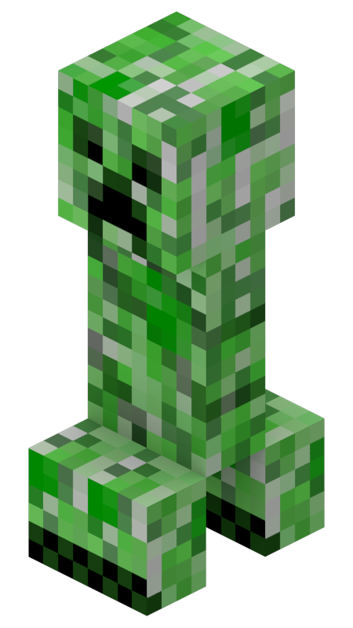

What is a Creeper?
A Creeper is a common hostile mob that approaches players silently and explodes, destroying blocks and dealing massive damage. They were originally created by mistake in 2009 when Notch mixed up the height and length variables of a pig model.
